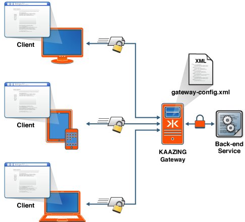

Setting Up the Gateway and Clients
This guide helps you download the Gateway distribution and set it up in your environment:
- Setting Up Kaazing WebSocket Gateway Clients
- Setting Up the Gateway Locally on My Computer
- Setting Up the Gateway on a Server
- Setting Up a Secure Gateway Configuration
- Uninstall Kaazing Gateway
Let’s get started!
Setting Up Kaazing WebSocket Gateway Clients
To set up Kaazing WebSocket Gateway clients, go to kaazing.com/download, click the name of the client SDK you want, and follow the instructions. You can download the client SDKs to your computer, install them via a package manager, or include them in your development environment via other means such as a content delivery network.
Kaazing WebSocket Gateway Client Tutorial Applications
There are tutorial applications publicly available on Github for all of the Kaazing WebSocket Gateway clients:
- Objective-C (iOS) - https://github.com/kaazing/ios.client.tutorials
- Android and Java - https://github.com/kaazing/java.client.tutorials
- JavaScript - https://github.com/kaazing/javascript.client.tutorials
- Microsoft .NET - https://github.com/kaazing/dotnet.client.tutorials
- Xamarin - https://github.com/kaazing/xamarin.client.tutorials
Setting Up the Gateway Locally on My Computer
Setting up Kaazing Gateway on your local computer is recommended if you want to quickly try out the Gateway.
Figure: A Localhost Configuration for Kaazing Gateway
To download and set up the Gateway on your local computer, perform the following steps:
- Ensure your system meets the system requirements. See kaazing.com/download, and you can find the
README.txtin theGATEWAY_HOMEdirectory if you have already unpacked the the Gateway distribution. - Download the Kaazing WebSocket Gateway from kaazing.com/download.
-
Install the Gateway by unpacking the compressed download of the Gateway.
Unpack the Gateway to any directory location. Unpacking creates the Gateway directory structure into a directory of your choice (for example,
C:\kaazingor/home/username/kaazing). See About GATEWAY_HOME to learn more about Kaazing Gateway directory destinations. -
Start a local Gateway.
- For Windows: use the Windows Services Manager or use the
net startcommand with administrator rights. Alternatively, in Windows Explorer, navigate to theGATEWAY_HOME/bindirectory where you unpacked the Gateway and double-click thegateway.start.batscript. - For Linux:
sudo service kaazing-gateway-community-5.0.x-platform start - For Ubuntu (Upstart):
sudo start kaazing-gateway-community-5.0.x-platform - For Linux, UNIX, or Mac: run the
gateway.startscript by navigating to theGATEWAY_HOME/bindirectory where you installed the Gateway and enter./gateway.starton the command line.
You can also start one of the pre-packaged brokers and the Gateway.
Start the Gateway using the pre-packaged AMQP broker:
./bin/gateway.start --broker amqp(Linux/Mac), or./bin/gateway.start.bat --broker amqp(Windows)Start the Gateway using the pre-packaged JMS broker:
./bin/gateway.start --broker jms(Linux/Mac), or./bin/gateway.start.bat --broker jms(Windows)When you successfully start the Gateway, messages display in your shell or command prompt indicating the services that are hosted by the Gateway. The startup message might differ depending on your Gateway configuration. To verify that the Gateway started correctly as a service, look at the log file in
GATEWAY_HOME/log/service.logthat is generated when the service is started or stopped. If the Gateway does not start successfully, see Troubleshoot Kaazing Gateway Configuration and Startup or contact your administrator. - For Windows: use the Windows Services Manager or use the
-
Verify the Gateway setup.
To verify that the Gateway is up and running, open a browser and access the Gateway home page at
http://localhost:8000/. The “It Works!” page displays.
You are now done setting up the Gateway locally.
- To start building your first application, see the For Developers documentation topics.
- For more information about configuration settings and to perform additional Gateway configuration, see About Gateway Configuration.
- For real-world demos, see http://kaazing.com.
- To uninstall the Gateway, see the Uninstall Kaazing Gateway section at the end of this document.
Setting Up the Gateway on a Server
You can override the Gateway default behavior and accept connections on a non-localhost host name or IP address.
Figure: A Server Configuration for Kaazing Gateway
To set up a server configuration:
- Follow the directions in Setting Up Kaazing Gateway Locally on My Computer.
- Stop the Gateway.
- To stop the Gateway on Windows, use the Windows Services Manager, press CTRL + C at the command prompt that was used to start the Gateway or simply close the command prompt, or use the
net stopcommand to stop the Gateway service. - To stop the Gateway on Linux, UNIX, and Mac, kill the process at the command line, or use the Linux or Ubuntu (Upstart) service
stopcommand.
- To stop the Gateway on Windows, use the Windows Services Manager, press CTRL + C at the command prompt that was used to start the Gateway or simply close the command prompt, or use the
- Navigate to the
GATEWAY_HOME/conf/directory and edit the Gateway configuration to update the value of thegateway.hostnameproperty by replacinglocalhostwith your host name or IP address.- Edit the Gateway configuration file you are using
gateway-config.xmlor edit your custom configuration file if you created one. The Gateway configuration files are described in detail in About Gateway Configuration. -
Replace
localhostwith your host name or IP address.For example, the hostname
example.comreplaceslocalhostas the property value forgateway.hostnamein the following Gateway configuration file:<properties> <property> <name>gateway.hostname</name> <value>example.com</value> </property> <property> <name>gateway.base.port</name> <value>8000</value> </property> <property> <name>gateway.extras.port</name> <value>8001</value> </property> </properties>Note: You can optionally specify default values for configuration elements using the
propertieselement in the “Property defaults” section of the Gateway configuration file. Doing so is recommended because it allows you to define a property value once and have its value used throughout the configuration.
- Edit the Gateway configuration file you are using
If you are using a message broker, start it. You can also start one of the pre-packaged brokers and the Gateway.
Start the gateway using the pre-packaged AMQP broker:
./bin/gateway.start --broker amqp(Linux/Mac), or./bin/gateway.start.bat --broker amqp(Windows)Start the gateway using the pre-packaged JMS broker:
./bin/gateway.start --broker jms(Linux/Mac), or./bin/gateway.start.bat --broker jms(Windows)- Start and verify the Gateway (as described in Setting Up Kaazing Gateway Locally on My Computer).
Setting Up a Secure Kaazing Gateway Configuration
By default, the Gateway listens for non-encrypted traffic. Secure communication between the browser and the server is necessary to ensure that only the intended recipient of a message can read the transmitted message and to allow the message recipient to trust that the message is indeed from the expected source.

Figure: An Encrypted Configuration Using Kaazing Gateway
For secure communication with the Gateway, consider configuring for the following levels of security:
- Secure network traffic Configure Transport Layer Security (TLS, also known as SSL) for secure communications channels to access the Gateway by setting up certificates. See Secure Network Traffic with the Gateway for more information.
- Limit access to services Use Cross-Origin Resource Sharing to control access to Gateway services based on the origin of an application by configuring cross-site constraints in the
gateway-config.xmlfile. See Configure the HTTP Challenge Scheme for more information. - Configure authentication and authorization with constraints to limit access to Gateway services to authenticated and authorized users. See Configure Authentication and Authorization for more information.
- Configure Kerberos network authentication for network authentication and communication between trusted hosts on untrusted networks. See Configure Kerberos V5 Network Authentication for more information.
Uninstall Kaazing Gateway
Uninstall the Gateway by stopping all the services and deleting the directory that contains the Gateway files.